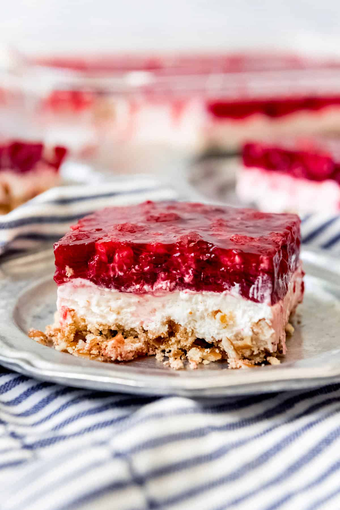

Back to Recipes
Raspberry Pretzel Salad

An all-time favorite dessert! This dish combinies delicious 'best-ofs' with salty and crunchy pretzels, sweet coolwhip, and tangy
raspberries! This is a family staple at our Thanksgivivng dinner, but is fantastic any time. Relatively inexpensive and easy
to make, this is a great potluck option that will leave everybody satisfied!
Ingredients
Crust
- 2 1/2 cups pretzels
- 3 Tablespoons granulated sugar
- 1/2 cup salted butter, melted
Middle
- 8 ounces cream cheese, softened
- 3/4 cup granulated sugar
- 8 ounces Cool Whip, thawed (or 1 ½ cups heavy cream, whipped)
Top
- 2 (3-ounce) boxes raspberry jello (or one 6-ounce box)
- 2 cups water
- 12 ounces frozen raspberries
Instructions
- Preheat oven to 350 degrees F
- Place pretzels in a large ziploc bag and crush; not too fine, leave in consistnet pieces
- Transfer to a bowl and add sugar and melted butter, stirring to combine
- Press into the bottom of a 9x13-inch baking dish with the bottom of a measuring cup.
Bake for 10 minutes, then remove from oven and cool completely
- In a large bowl, beat the cream cheese and sugar with an electric hand mixer until smooth
- Fold in the Cool Whip with a spatula, then spread over the pretzel crust in an even layer,
taking care to press all the way to the edges of the pan to create a seal that will prevent
the jello layer from seeping through
- Chill in the fridge for 30 minutes
- While the middle layer chills in the fridge, microwave the water for 3-5 minutes, until boiling,
then stir jello into the hot water until dissolved
- Add frozen raspberries and stir
- Once the cream cheese layer has chilled and the jello has cooled, gently pour the raspberry jello mixture over the cream cheese layer
- Refrigerate until the jello is completely set, around 2 to 3 hours. Slice into squares and serve